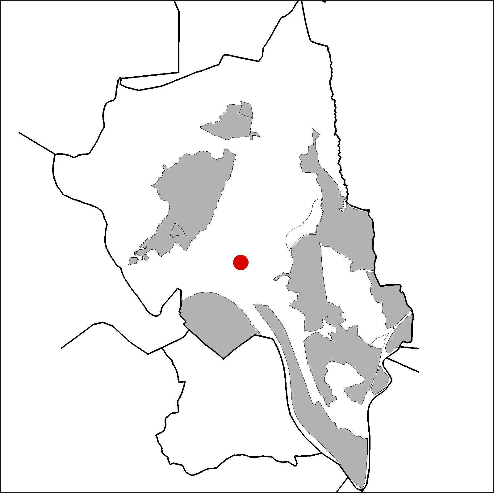
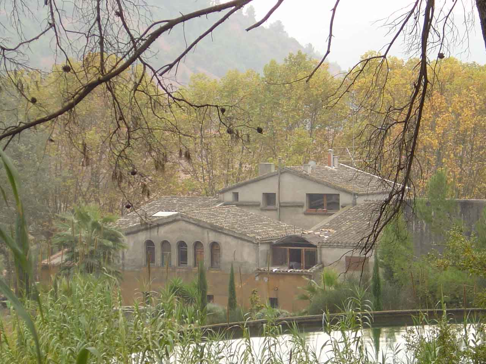

|  |  |
Nom de l’element: Can Corominas
Clau d’identificació: B.1.01
Nucli o indret:
UTM: X=413.722, Y=4.592.395. 45 m snm.
Referència cadastral: Polígon 20, parcel·la 9503 (08053A020009503)
Règim del sòl: Sòl no urbanitzable.
1.1. Època de construcció i tipologia:
Masia catalana del segle XVIII. Murs formats per tàpia i pedres; cobertes de fusta i teula. És d’estructura senzilla, amb planta baixa i planta pis, i coberta a dues aigües. Té una galeria d’arcs a la planta superior. S’hi han construït cossos annexes, com magatzems en forma d’”L” i al 1992 es va ampliar la planta superior. Està envoltada de cultius de vinya i de regadiu.
1.2. Estat de conservació:
Les estructures portants, els forjats, les voltes i els acabats interiors presenten un bon estat de conservació. Les cobertes i les façanes presenten un estat mitjà de conservació. El paviment i les obertures estan en mal estat, detectant-se humitats a la casa. En global, el seu estat de conservació és bo-regular.
1.3. Ús actual:
Habitatge i agrícola.
1.4. Accés:
Accés des del camí, proper a l’estació de la RENFE.
Antiga masia catalana del segle XVIII de grans dimensions, envoltada de vinya i regadiu.
3.1. Usos admesos:
Habitatge rural (màxim 3 habitatges); residencial; hoteler (excepte aparthotel; i amb un màxim de 30 places); oficines i serveis; indústria vinculada a productes del camp (industrial, categoria 1ª); educatiu; recreatiu cultural i social; recreatiu de restauració; esportiu.
3.2. Condicions d’ordenació:
Segons Pla Especial a redactar.
3.3. Accés i serveis:
Camí proper a l’estació de la RENFE.
BCIL (Bé Cultural d’Interes Local)